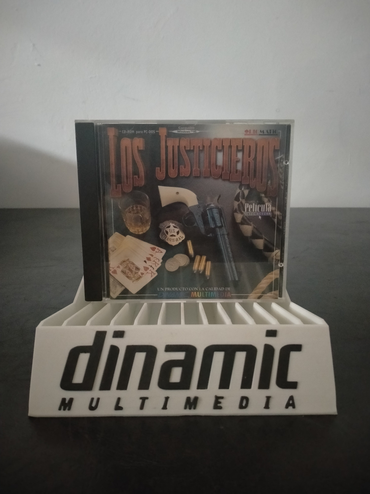

Ficha #000000
Los Justicieros
Los Justicieros es una película interactiva española de ambientación western desarrollada por Picmatic y comercializada para PC por Dinamic Multimedia durante la expansión del CD-ROM multimedia en la década de 1990. La propuesta combina secuencias de vídeo con imagen real, humor paródico y fases de disparo sobre raíles en las que el jugador debe reaccionar ante enemigos y situaciones predeterminadas. Procede de una producción concebida inicialmente para máquinas recreativas basadas en vídeo, posteriormente adaptada al ordenador doméstico mediante almacenamiento óptico. Su utilización de vídeo digitalizado y actores reales la convierte en una muestra representativa de la experimentación española con el Full Motion Video y el concepto de cine interactivo durante los primeros años de Windows 95.
- Formato
- Jewel Case
- Plataforma
- Win95
- Género
- Película interactiva Shooter sobre raíles Acción Western FMV
- Serie
- Todos Jewel Case Dinamic multimedia
- Desarrollador
- Picmatic
- Distribuidor
- Dinamic Multimedia
- EAN
- —
Contenido de la edición
- Caja jewel case
- CD-ROM
- Carátula impresa
Preservación
- Protección
- No determinado
- Formato recomendado
- BIN/CUE
- Jugable en virtualización
- Sí
Se recomienda preservar el CD-ROM mediante una imagen BIN/CUE que conserve la estructura completa del soporte y documentar las características audiovisuales de la edición. La ejecución puede realizarse en una máquina virtual con Windows 95, aunque podrían ser necesarios ajustes de compatibilidad relacionados con vídeo, profundidad de color y reproducción multimedia.